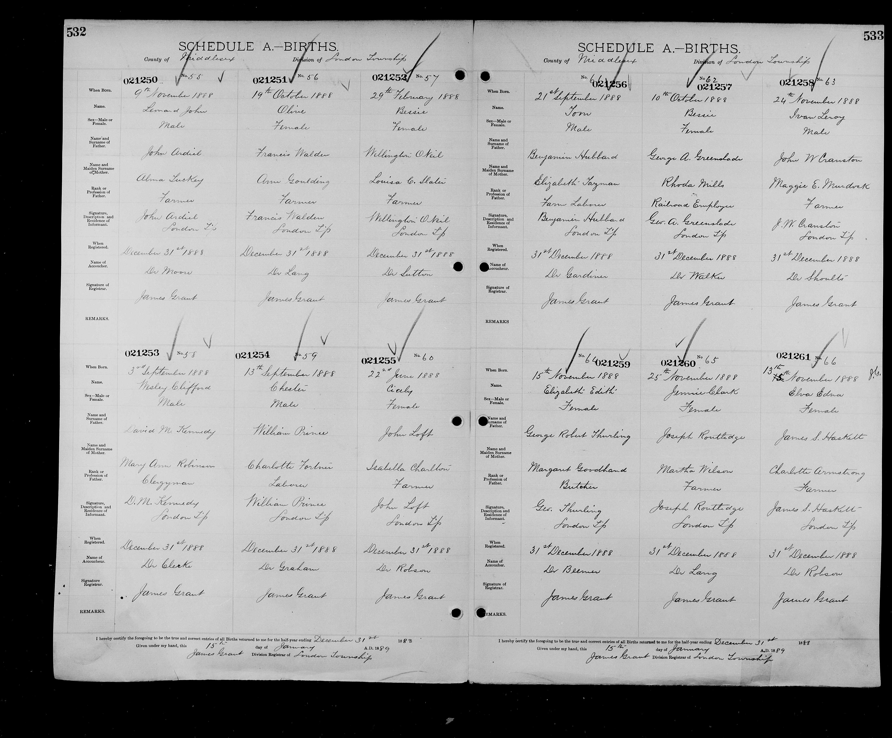
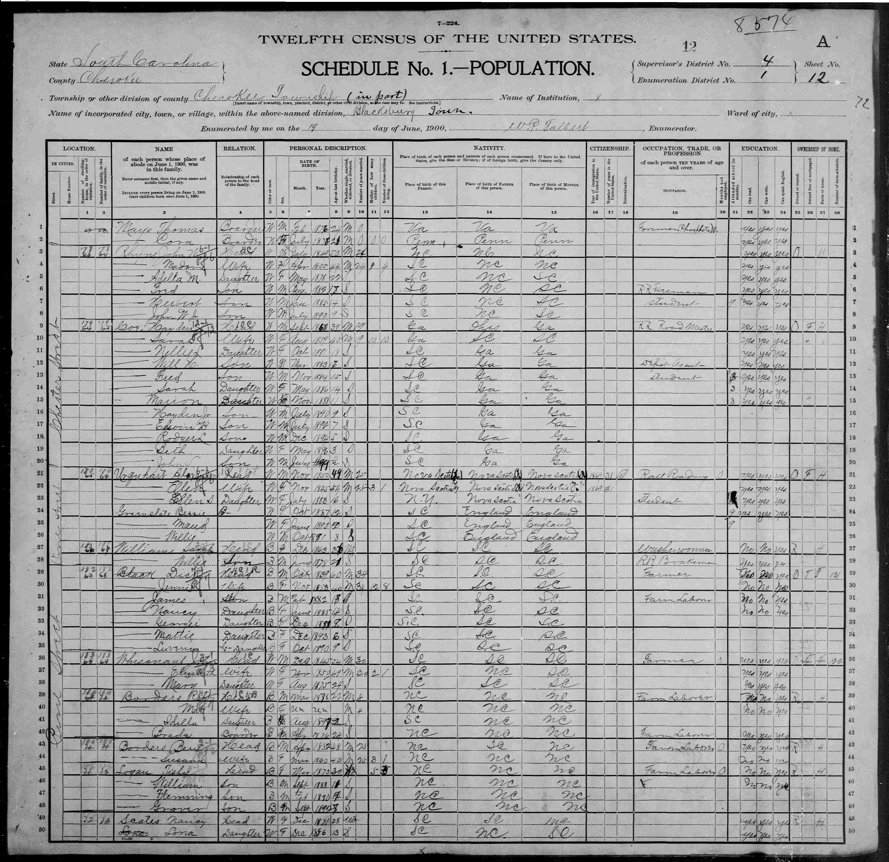
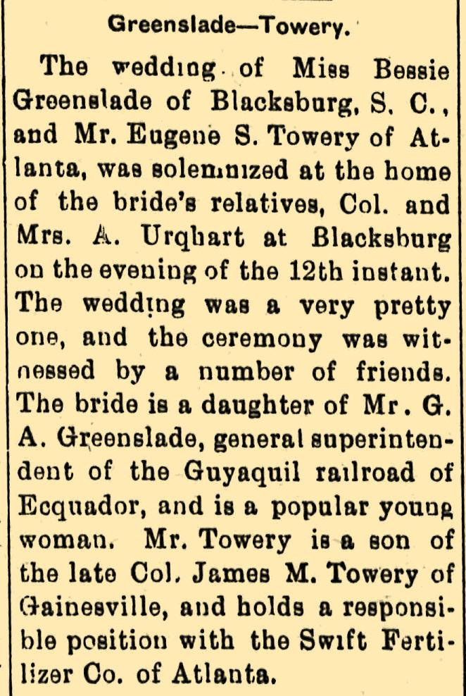
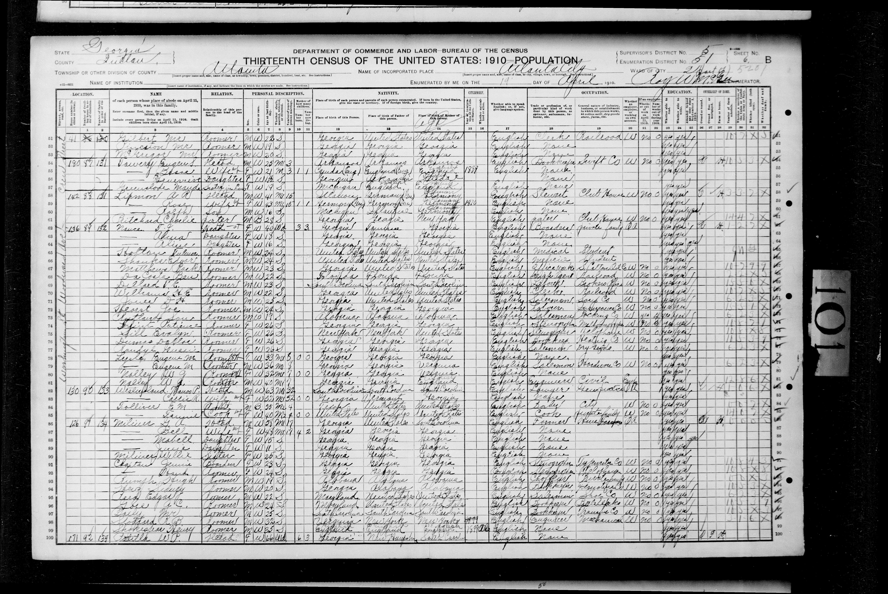
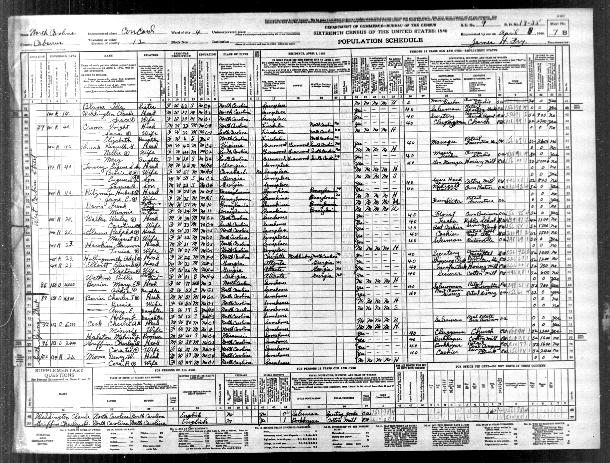
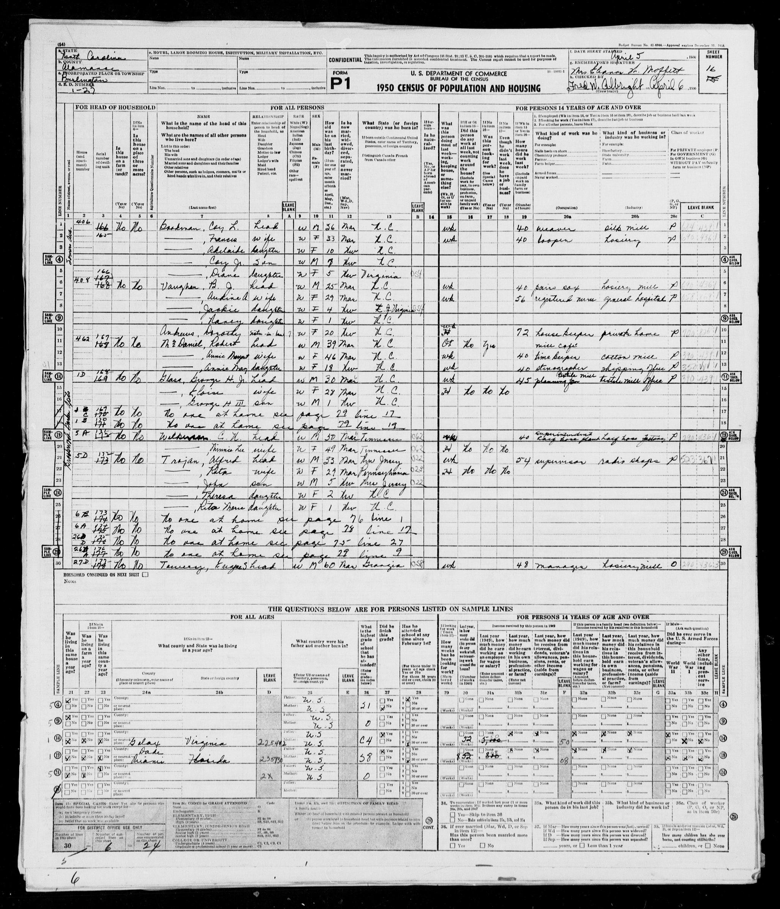
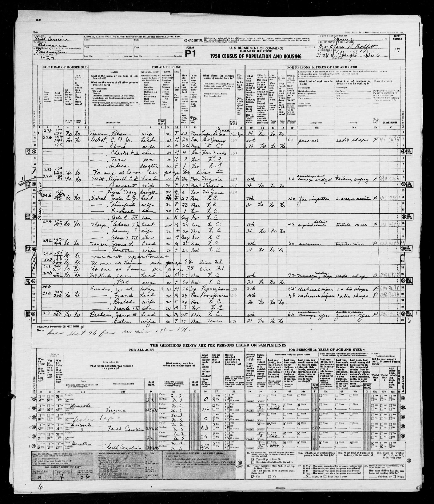
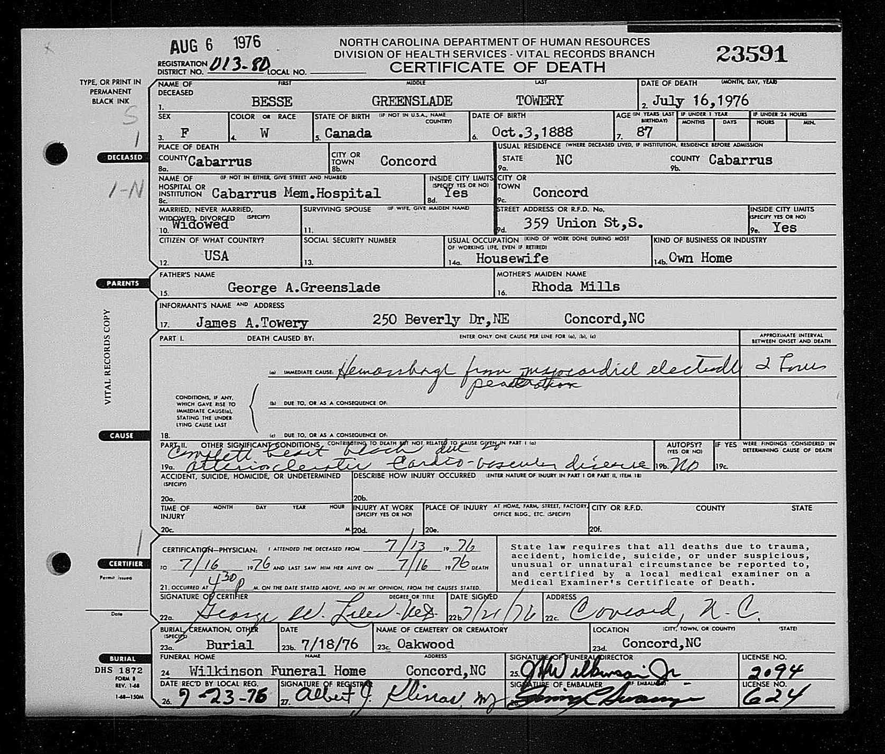
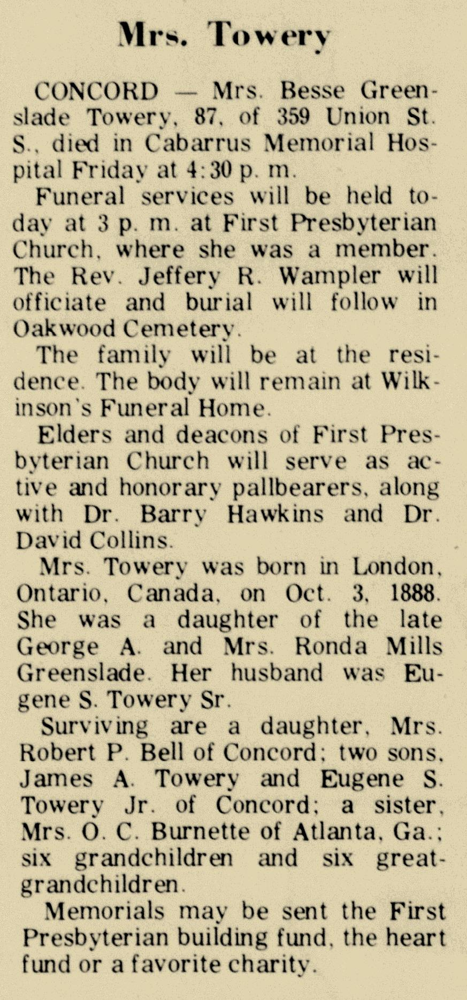
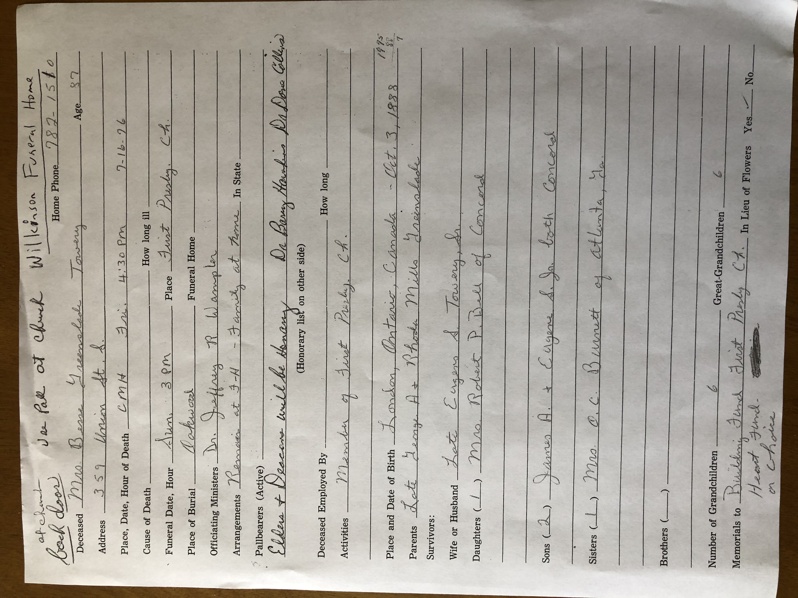

Record of birth - entry is in top row, second from right.
Hover over image to see enlarged version.
(Source: "Canada, Ontario Births and Baptisms, 1779-1899", database, FamilySearch (https://familysearch.org/ark:/61903/1:1:FMWJ-D4L : 13 February 2020), Bessie Greenslade, 1888.)

Extract from 1900 census of Blacksbug, South Carolina.
The census indicates (starting on line 24) that Bessie Greenslade, age 12, was living, along with her sister Maud Greenslade, age 9, and her brother, William, age 8, with the Urquhart family. Bessie gave her second daughter the middle name of "Urquhart".
Hover over image to see enlarged version.

Marriage notice, Gainesville News (Gainesville, Georgia), October 30, 1906

Extract from 1910 census of Atlanta, Georgia.
The census indicates (starting on line 54) that Eugene S. Towery, age 25, was the head of a household that included (1) his wife Besse, age 21, (2) his daughter Genevieve, age 1, and (3) his sister-in-law, Maude Greenslade, age 19.
Hover over image to see enlarged version.

Extract from 1940 census of Concord, North Carolina.
The census indicates (starting on line 50) that Eugene S. Towery, age 53, was the head of a household that included (1) his wife, Bessie, age 51, (2) his son Eugene S., age 21, and (3) his son, James A., age 23.
Hover over image to see enlarged version.

Extract from 1950 census of Burlington, North Carolina- page 1
The census shows (beginning on the last line) that Eugene Towery, age 60, was living with his wife Bessie, age 63.
Click on photo to see page 2.
Hover over image to see enlarged version.

Extract from 1950 census of Burlington, North Carolina - page 2

Certificate of Death. (Source: "North Carolina Deaths and Burials, 1898-1994", database, FamilySearch (https://familysearch.org/ark:/61903/1:1:HHQM-21T2 : 21 January 2020), Besse Greenslade Towery, 1976.)

Obituary, The Daily Independent (Kannapolis, North Carolina), July 18, 1976

Information on file at Wilkinson Funeral Home in Concorde, North Carolina with regard to Bessie Greenslade